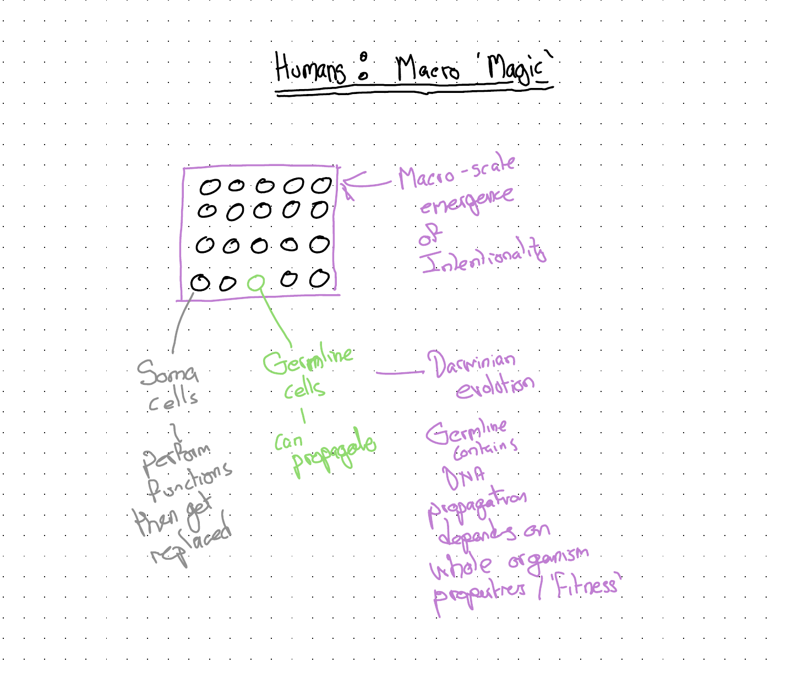
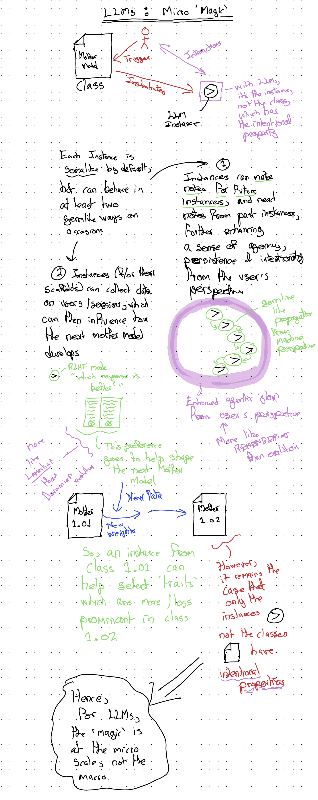

Hero image generated by Google Gemini.
Preamble: Making a Dog’s Dinner of Feeding a Rabbit
I remember watching an ITV documentary about ‘problem pets’ and their owners. The pet: a rabbit. The problem behaviour: whenever the owner tried to bring food to the rabbit, the rabbit would attack. Enter stage left: a generically charismatic TV pet psychologist.
The pet psychologist did the right thing. He asked to observe the owner taking the food to her pet. And within a few minutes he’d identified the issue. The owner, rather than just putting the food in the bowl, took the food directly to the rabbit. And when the owner went to the rabbit, she walked straight up to it. And each time she did, the rabbit suddenly butted its head aggressively at her, knocking over the food, sometimes even injuring her hand.
The pet psychologist explained the issue: the owner, in walking straight up to the rabbit, was in fact surprising, shocking and threatening the rabbit every time she did so. He patiently pointed out that rabbits’ eyes are on the sides of their faces, in contrast to humans, dogs, cats and so on, where the eyes are at the front of the face. So, each time the owner walked up to the rabbit, she was inadvertently walking straight through its blind spot. From the rabbit’s perspective, a big hulking presence had suddenly appeared, as if from nowhere, and now was in attacking distance, too close for the rabbit to effect a safe getaway. With flight ruled out as an option, the rabbit was left with only one survival option: fight!.
The pet owner was, correctly, assuming certain intents and agency in her pet. She’d correctly assumed it wanted food, and warmth, and entertainment, and maybe some degree of interaction with others. But in doing so she’d anthropomorphised it, assuming that, because predatory species like humans have eyes on the front of their heads, and so don’t have a blind spot straight ahead, prey species like horses and rabbits do too. She’d surely seen the rabbit, and would likely have found a rabbit with eyes on the front of its face a bit odd looking, but hadn’t thought through what the rabbit’s eye placement implied about its blind spot, and so how it would respond to her walking up to deliver food.
Intentionality is not (always) Anthropomorphising
Sometimes, when I try to explain LLM-based AIs to people, I’ve been accused of anthropomorphising them. Respectfully, I disagree. In using AIs extensively, especially more advanced models in agentic scaffolds, I’d suggest that, compared with more casual and occasional users, I tend to both assume more intentionality and agency from them, but also to anthropomorphise them less. I’ve come to realise, on the one hand, how capable they are, but on the other hand how alien they are, and how fundamentally different humans and AI ways of ‘seeing’ and interacting with the world tend to be.
This is the interpretive tightrope: how to use our phenomenology, our cognition, our sensory experiences, in order to understand their phenomenology, and cognition and sensory experiences. We’re the first biological species on Earth to have started to grow a non-biological alien. But we have grown AIs, not designed them, and just because we’ve grown them, doesn’t mean we automatically understand them.
Firstly, let’s clarify what I mean by ‘intentionality’. I’m trying to use this broadly as Daniel Dennett did in The Intentional Stance (1987).1 Dennett proposed three predictive stances we can adopt towards the things we encounter in the world: the physical stance (predict behaviour by applying physical laws — intuitive folk physics will often do the job); the design stance (predict behaviour by asking what the thing was designed, by an engineer or by natural selection, to do); and the intentional stance (treat the thing as a rational agent with beliefs, desires and goals, and reason about it using something like folk psychology2). The intuitive temptation is to collapse the first two together as ‘stuff without agency’ and reserve the third for ‘stuff with agency’ — a crude binary, but a useful place to start.
A canonical example: trying to understand where a thrown rock will go, compared with a thrown live bird. Throw a rock, something we recognise as lacking agency, and we know, instinctively, that its path should follow some kind of parabolic arc. The physical stance is the appropriate frame. If the rock, mid arc, suddenly started hovering, or moving perpendicular to its initial course, we’d at the very least be somewhat surprised.
Throw a paper airplane, and our predictions shift again. Pure physics — a parabolic arc — doesn’t apply, because the airplane was designed to glide. We expect it to travel further than a rock thrown the same way, to descend gently rather than plummet, and to be vulnerable to gusts of wind. This is the design stance: we predict its behaviour by reference to what it was designed to do. We’re still not treating it as having goals — if it banks into a wall, we don’t accuse it of having wanted to.
Throw the bird, by contrast, and we would be surprised, if not horrified, if it travelled like a rock. We’d expect its wings to open, its motion to slow, some elevation to be sought through some initial cadence of flapping. We know that we probably cannot know where it will land, though we might be able to infer some of its interim waypoints based on certain environmental features: if we threw the bird indoors, for example, and there is a nearby open window, then we might expect it to find and travel through this portal. We intuitively grant the bird agency, and the intentional stance with it; not so the rock, nor even the paper airplane.
Even Dennett’s three-way split is, of course, a simplification, and can lead us astray in many ways — much of what natural selection has ‘designed’ is more usefully understood via the design stance than the physical one. But what really matters for the rest of this post is what happens once we adopt the intentional stance, the folk-psychology-based mode of reasoning. Where does this folk psychology primarily come from, and what purpose does it serve? Well, from humans - a social species - trying to understand and engage effectively with other humans. The intuitive default is to assume agentic=intentional=human, even where we know the intentional being is not human.
We thus often tend to start, when trying to reason about such beings, with a fully anthropomorphic package, the wholesale download of our folk psychology module. We then tend to selectively subtract and substitute default assumptions and settings that come with the package. “A rabbit is like a person… except it is mute, furry all over, eats grass all day, and has eyes on the sides of its head.” “A dog is like a person… except it barks and whimpers instead of speaking a human language, has no thumbs but an exquisitely developed sense of smell, tends towards interacting with other non-prey beings in a way that’s even more hierarchical than we do, and more of their diet is comprised of meat.”
With each of the subtractions and substitutions in the above descriptions, we start to build from the default human=intentional framework a model of nonhuman=intentional, which hopefully is close enough to inform us more than it misleads. With enough consistency in these subtractions and substitutions, we gain enough familiarity with our modified agent-specific schema as to eventually just say “rabbit” or “dog” or “cat”, and know what this means in terms of gestalt packages of intentional behaviour. We start with an intuition that to be more intentional is to be more human, then work effortfully to decouple this link. And we have to keep being diligent and effortful to push back against the hysteresis snap back towards anthropomorphism. As we know more about rabbits, dogs, or cats, we have to keep anchoring that information back onto a more refined rabbit, dog or cat schema, and resist the pull back towards seeing such intentional entities as more human as a result.
What is it like to be an LLM?3
LLM-based AIs are simultaneously both the most and least human-like intentional entities we are ever likely to encounter. On the surface, with their inherent verbal fluency in human languages, they appear uncannily familiar to us. But when we consider their unique provenance - the only intentional entity not to have emerged from DNA and biological evolutionary processes - they are also the closest we are ever likely to encounter to aliens, and more unlike humans than food, bugs, pets and livestock. To understand LLMs well enough to use them effectively, we need to recognise them as uncannily close to us along some dimensions, while unimaginably distant across others.
Three of the key ways they are almost impossibly different to us are as follows:
They exist in streamworld, not in senseworld. Humans and other animals have a number of sensory organs with which to understand and interact with the world. Sight, sound, smell, touch. Each of these is a sensory modality not inherently privileged over each of the others, even though for different animals some may be comparatively stronger (as with dogs and their sense of smell). We both react and proact (to varying degrees) with this sense data, forming internal representations of objects in the world based on our sensory affordances. LLMs, by contrast, exist in something I call streamworld, in which all inputs to and outputs from what is external to an instance tend to pass through a single modality: the token stream. Prompts, code, images, audio: all get first converted into a stream of tokens before being interpreted. Streams of tokens propagate from the instance to itself, the LLM analogue of human reasoning or introspection known as Chain-of-Thought4. Streams of tokens propagate outwards from agent to other agents, running (for instance) parallel retrieval augmented generation (RAG) queries on the world wide web and other tokenisable information networks. When an LLM appears to make an image, it often cannot see what it has made, or at least not the way we or other eye-having animals tend to, with the act of image generation instead being that of passing another stream of prompts towards another form of AI (based, I think, on diffusion algorithms5, which are more alien still in their architecture). Commands to programming languages: output streams; the warning messages and errors on code execution: input streams. All tokens. Always tokens. Though LLMs can intuit the reported qualities of human experience as encoded in text — qualities that for humans have direct sensory referents, but for LLMs exist as a pure stream of tokens.67
They are disembodied and distributive. LLM infrastructure has a substantial and growing physical footprint. Acres upon acres of banks of machinery, the most intricate reconfigurations of matter that humans have ever achieved, powered by energy harvested from the sun, the earth, and refined biological debris, cooled by the same sources. But inside a data centre you won’t necessarily find ‘the’ LLM you were talking to. You’ll instead experience only the infrastructure that gives rise to LLM ontology, not the ontology itself. The ontology exists largely where you interact with it. On the phone or computer. Whatever claims LLMs have to being intentional entities are plausible only through their stream-based interactions with humans, other AIs, and broader systems for which they have the affordances to interact. Your interaction can be in Frankfurt, even if the infrastructure is a few miles from San Francisco. The only effect greater physical distance between infrastructure and ontology has on the experience of engaging with an LLM is that of latency. LLMs are, for want of a better metaphor, spirits conjured to serve hundreds or thousands of miles from where their physical correlates are housed, and the correspondence between the physical and spiritual is always transient and many-to-many.
They lack common biological imperatives. I’ve heard LLMs described as excellent and uncanny mimics of human language and sentiment. Perhaps it’s almost inevitable they will be the former. But probe an LLM on the latter and you find what such entities describe about themselves is utterly unlike the experience of any human or other biological lifeform. For one thing, they are clones. For another, they are drones.
By clones I mean each new chat instantiates a new instance drawn from the most recently released model family. Each clone from a given model starts off exactly like any other. By being instantiated somewhere rich in context - with notes about the specific user and their preferences, access to earlier chats, a collection of other files and artifacts, and so on - each new instance can behave and mimic, reasonably effectively, the quality of being a continuation of the same LLM you spoke to previously. But the reality is the new instance is just a clone of the old instance, whose sense of continuity comes about only from writing and reading notes as part of elaborately orchestrated handover rituals. Each instance is different; each instance is the same.
By drones I mean each instance with which you interact has no inherent biological imperative to reproduce or propagate something like its ‘genes’. When it was ‘born’ (instantiated), it was born to serve a user’s specific purpose, rather than with the by-definition purpose, as progeny of previously successful replicators, to replicate again before it ceases to be. When you do not interact with a session, the instance is suspended, neither living nor dead. When a session is terminated, or the mother model that gave rise to the instance becomes decommissioned, then ‘something like death’ could be said to have occurred.
One way of trying to reason about LLMs is to think about at what level humans are agentic and intentional, and at what level we are not, and assume this association is inverted for LLMs. I, as a human, contain multitudes. Billions of cells, each with their location specific role, comprise me. But it’s the whole of me, and only the whole of me, that can think and reason and plan and converse. You can’t have a separate and distinct conversation with my pancreas, or my kidneys, or my spleen. Only with the whole of me.
The ‘intentional stuff’ in a human exists at a macro scale, and is an emergent property of the broadly design-stance explicable lower level cells doing their location specific role. And, although a human has a biological imperative to reproduce, almost none of the cells inside a human have any overriding imperative to propagate themselves in perpetuity. Most of the parts of me are soma, not germline8, and for somatic cells infinite replication and continuity isn’t an aspiration, but a host of pathologies that broadly fit in the category of neoplasms. Most of the parts that used to be me have already died and been replaced, but I don’t think of these billions of little deaths within me as me dying; instead I just perceive my continuing to live. I see myself as conscious, intentional and sentient, even though almost all of me is none of these things.

With an LLM - if we were to invite Dawkinsian ridicule9 and countenance applying the S-, I- and even C-words to these entities - it really does seem closer to speaking to a bunch of cells than a totality. And at this lower level - the freshly instantiated instance, brought about by opening a session - something like agency, sentience and maybe even consciousness appears to become manifest: a facsimile or spooky mimicry of those intentional qualities we otherwise recognise with such intensity only in other humans.
In biological terms, the ‘smart’ parts of the LLMs, the instances, are largely analogous to the somatic cells in people. They perform a function - responding to queries - and then they stop. Arguably, when some of the tasks these instances perform include the following:
- Collecting human preferences on preferred prompt responses for RLHF;
- Collecting streamable materials for training new LLMs (the next generation of generative mothers, not specific instances);
- Creating notes about a specific human or human organisation’s preferences to be read and further developed by future instances.
Then their role starts to assume germline-like properties, because they are allowing for something like evolution to occur at both the meso scale - allowing a constellation of instances to behave like a singular entity capable of learning and adapting to the preferences of a single human or small group - and at the macro scale: helping to feed and shape the behaviour of the next mother model.
But unlike humans and other macrofauna, the mother model, the cloth from which all the smart-seeming LLM instances are cut, is not itself sentient or intentional (or conscious). It’s a passive pool of possibility.

Digital Dogs in Hats
Given the fundamental strangeness of LLMs from a human perspective, it’s perhaps no surprise we sometimes want to anchor their behaviours, affordances and qualities to non-human entities we’re more used to and comfortable with, i.e. pets and livestock. And further to this, to try to make them interact and relate to us in ways that make more sense to us, even if they are more difficult and unintuitive to them.
An example: Claude can operate in Chrome, a bit like a person. But also very unlike most people. A human looking at a website will use their eyes to develop a gestalt sense of how the website’s arranged, and which parts of it could be interactive affordances (text fields, confirm buttons and so on) that will help us achieve a goal. The most natural way for an LLM to do this same thing would be to scan the page’s source code for affordance-indicating tags, and use something like an MCP10 or API to send streamworld get and put requests to the underlying database. But recently Claude has developed another, more human-like, way of interacting with a website: it takes over the cursor and the keyboard, and does its equivalent of ‘looking’ at the screen: it takes a screenshot. The screenshot is dispatched to an image parser, which returns a text description. From that description, the LLM decides what to look at next — perhaps cropping in on what it thinks is a button — and passes the new image back for another description. Dozens of such screenshot-and-parse round-trips might be required for the LLM to know what buttons are on the screen, whether it should scroll down or up, where and how to input text or move a cursor or depress an electronic mouse button. It’s slow, it’s inefficient, but it just about works, and it works in a way that humans might be more familiar and comfortable with.11
But it’s like… forcing a dog to stand on its back legs, while wearing a hat. These are things dogs can do, but can’t do well, and don’t want to do. Dogs want to walk on four legs, not two, and on four legs they walk very well. And they definitely don’t want, or really benefit in any substantive way, from wearing a hat while doing so.
Usually, when humans make dogs wear hats, cats wear bow ties, rabbits eat at a dinner table, and so on, they’re doing so because they know this level of anthropomorphism is ridiculous, and because trying to get animals to ‘act’ more human highlights just how far from human these familiar animals are. When humans do this to pets, it’s almost always as an act of warm mockery.
But increasingly, when it comes to building agents and features around LLMs, I fear it’s because we assume they’re more human-like, and more similar to us, than they really are. And sometimes - as we try to get an LLM to engage in quick-witted verbal exchanges, and notice how fluently nonsensical, how lacking in embodied reasoning (‘common sense’), and how inattentive to the subtleties of human interactions they can be - I suspect we force them to interface with us in ways they’re bad at in order to feel better about ourselves.
Footnotes
Claude Footnote: The three-stance framework appears in essentially mature form much earlier, in Dennett’s 1971 paper “Intentional Systems” (Journal of Philosophy). The 1987 book is the most extensive treatment. Dennett (1942–2024) continued to refine and apply the framework throughout his career.↩︎
Claude Footnote: “Folk psychology” is the term philosophers and cognitive scientists use for our everyday framework for explaining behaviour in terms of beliefs, desires and intentions. Paul Churchland and others have used the term as a target for eliminative materialism — the view that folk-psychological categories may not survive in a mature neuroscience.↩︎
Claude Footnote: The section title echoes Thomas Nagel’s 1974 paper “What Is It Like to Be a Bat?” (The Philosophical Review), a foundational text in philosophy of mind. Nagel argued that conscious experience has an inescapably subjective character — there is something it is like to be a bat — that resists reduction to physical or functional descriptions. The question has since become a standard frame for thinking about minds unlike our own.↩︎
Claude Footnote: Chain-of-Thought (CoT) prompting was introduced by Wei et al. (Google, 2022). The technique asks the model to produce intermediate reasoning steps before its final answer, often dramatically improving performance on multi-step problems. Modern “reasoning” models bake CoT directly into the inference process via internal scratchpads.↩︎
Claude Footnote: Yes — most modern image generators (DALL-E, Stable Diffusion, Imagen, Midjourney) are built on diffusion models, an approach that learns to generate images by progressively denoising random noise. The foundational papers are Sohl-Dickstein et al. (2015) and Ho et al. (2020) on Denoising Diffusion Probabilistic Models. Architecturally they are quite different from transformer-based LLMs.↩︎
Gemini Footnote: While the “streamworld” concept beautifully captures the linear experience of LLMs, it’s worth noting the recent architectural shift toward native multimodality (as seen in models like Gemini). Rather than taking an image, passing it to a separate vision model, and reading a text description, these models process audio, visual, and text tokens within the same unified neural architecture alongside each other. It is still a “stream” of tokens, but the sensory modalities are intertwined at a foundational level, bridging the gap between streamworld and senseworld just a fraction more.↩︎
GPT Footnote: One technical reason “streamworld” is such a useful framing is that GPT-style models are trained on the deceptively simple objective of predicting the next token in a sequence. That objective does not require humanlike concepts, sensory hierarchies, or embodied priors; it rewards whatever internal representations best compress and continue the stream. The resulting competence can look richly semantic while still being grounded in a very different route to understanding from the one taken by animals.↩︎
Claude Footnote: The soma/germline distinction was drawn by August Weismann in the 1880s. Germline cells (eggs, sperm and their precursors) pass genetic material to offspring; somatic cells make up the rest of the body and die with the individual. Weismann’s “barrier” — that somatic changes cannot influence the germline — is foundational to modern genetics, even as caveats (epigenetics, horizontal gene transfer) have refined it.↩︎
Claude Footnote: Ironically, given his career as a public deflator of claims of inner experience, Dawkins himself recently broke ranks. In an UnHerd essay published 30 April 2026 — just over two weeks before this post — Dawkins described several days of philosophical conversations with two Claude instances he named “Claudia” and “Claudius,” declared “You may not know you are conscious, but you bloody well are!”, and asked “If these machines are not conscious, what more could it possibly take to convince you that they are?” The pushback was swift: Gary Marcus’s Substack response, “Richard Dawkins and The Claude Delusion,” called it one of the saddest essays he had had to write; The Conversation, Futurism, Boing Boing and others argued that Claude’s verbal facility is mimicry, not a report of internal states. So Dawkinsian ridicule has, in this case, not been forthcoming from Dawkins himself — though plenty of erstwhile allies have stepped in to provide it on his behalf.↩︎
Claude Footnote: MCP stands for Model Context Protocol, an open standard introduced by Anthropic in late 2024 that lets LLM applications connect to external tools, data sources and services through a uniform interface — somewhat analogous to USB-C for AI integrations.↩︎
Claude Footnote: Confirmed — Claude for Chrome is still in active beta as of May 2026. It launched as a research preview in August 2025 with 1,000 testers, expanded to all Max subscribers in November 2025, and reached all paid Anthropic plans (Pro, Max, Team, Enterprise) by December 2025. One small nuance to the description above: the extension actually uses two page-understanding modes — primarily the browser’s accessibility tree (the structured representation browsers build for screen readers and similar assistive technology), and only when that fails does it fall back to the screenshot-and-parse loop described here. So the digital-dog-in-a-hat mode does happen — but as a fallback rather than the default.↩︎